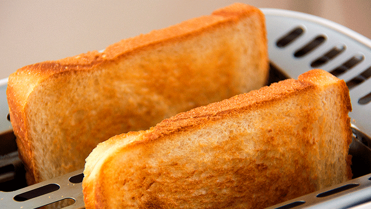
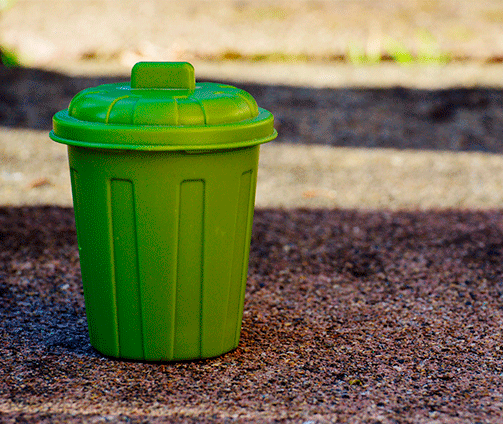
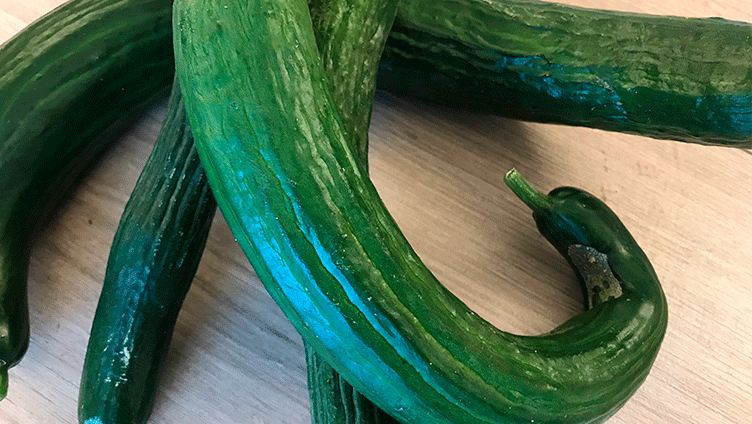
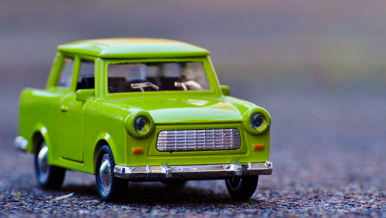

Facts om madspild

HVERT ÅR SMIDER EN GENNEMSNITLIG HUSSTAND 25 KG BRØD I SKRALDESPANDEN

HVERT ÅR SMIDER EN GENNEMSNITLIG HUSSTAND 25 KG BRØD I SKRALDESPANDEN
Vi køber for meget. Hvert år bliver der i de danske husholdninger smidt ca. 260.000 TONS mad ud

SKÆVE GRØNTSAGER
Der går hvert år ca. 33.000 TONS grøntsager til spilde i det danske landbrug.
Dette skyldes bl.a., at grøntsagerne har skæve eller grimme former, men intet fejler.

EN TREDJEDEL AF ALLE FØDEVARER PÅ VERDENSPLAN GÅR TIL SPILDE
Det svarer til, at hver gang du køber tre poser med mad,
så lader du den ene stå på parkeringspladsen i stedet for at tage den med hjem
Artikler
Sundhed
De seneste mange år har man set en tendens til at producenter “supersizer” deres produkter. Det får forbrugeren til at vælge en pakke eller portion, der er større, end hvad han egentlig har behov for. Denne tendens kan ses på folkesundheden, for i dag er cirka halvdelen af alle voksne danskere overvægtige.
Vi smider 814.000 ton mad ud året. Politikerne bør tvinge os til at reducere madspildet
14 procent af verdens madspild sker i transporten, og det forventes, at vi kan reducere udledningen af drivhusgasser i fødevaresektoren med 25 procent, hvis vi inkluderer håndteringen af madspild i vores klimaplaner.